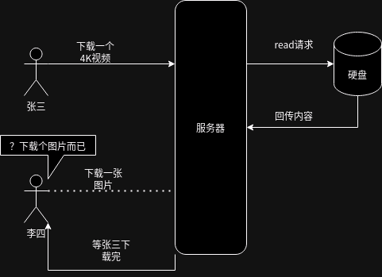

而启动socket的流程可以是linux提供的一套API,服务器端和客户端略有不同，在服务器端，流程是这样的:
而启动socket的流程可以是linux提供的一套API,服务器端和客户端略有不同，在服务器端，流程是这样的:

编译工具gcc和llvm
虚拟环境的选择： 由于宿主机为Linux环境，虚拟化便舍弃VMware,采用经典的QEMU+KVM的虚拟化方案，又因为采用的宿主机是X86的架构。而后面需要虚拟的开发板为ARM架构，所以采用了QEMU虚拟开发板。[Problem1] : 这里需要编译Linux源码并且构建文件系统，比较麻烦，可以参考网上教程。
文本编辑器: Vim
构建工具: Make和CMake(C语言)，RUST和Zig用其原生的就可以了。
作业的选题： 1.基本的文件I/O ， 2.多线程编程， 3. 网络编程
为什么选这三个题材: 因为这三个题目之间之间有着递进的关系，前一个是后一个的基础，首先是基本的文件I/O,由于基本的文件I/O的效率不高，并且对于有着一定并发量的场景支持的不好(详细的例子可以看后面张三和李四的例子)，所以引出多线程(进程)编程，[Problem2] : 多线程的程序调试起来非常麻烦，并且GDB不能很好的调试这类程序，所以采用了一个简单(简陋)的日志系统，也许以后可以找到更好的方法。采用多个进程或线程对于文件进行操作，并且更进一步的，由于Linux一切皆文件的思想，对于网络套接字socket也是一种文件，完全可以按照操作文件的方法对于网络socket采取读写，可以按照上面的对于文件的操作来控制网络。更进一步的，为了进一步的提高网络服务的性能，可以采取一种多路I/O复用的技术继续提高网络的性能，中心点集中，围绕着一个I/O问题不断的提升其性能。
#include<stdio.h>
#include<stdlib.h>
#define MAXLEN 1024 //最多读取1024个字节
int main(int argc , char *argv[]){
FILE *Need_to_read = NULL;
const char* file_path = "hello.txt";
Need_to_read = fopen(file_path, "r");
if(Need_to_read == NULL){
printf("读取文件错误，请检查对应的文件路径");
exit(-1);
}
fseek(Need_to_read, 0 , SEEK_END);
const long file_size = ftell(Need_to_read);
if(file_size > MAXLEN){
printf("[Error] : file_size 必须小于MAXLEN");
exit(-1);
}
fseek(Need_to_read,0,SEEK_SET);
char * content = (char *)malloc(sizeof(char) * (file_size + 1));
if(content == NULL){
printf("分配内存失败，请检查自己的计算机");
exit(-1);
}
fread(content , 1 , file_size , Need_to_read);
content[file_size] = '\0';
printf("content is %s",content);
fclose(Need_to_read);
return 0;
}
然后使用gcc -o hw1_1 hw1_1.c 运行这个文件，发现在终端上已经打印出了hello.txt中的文本内容，但是经过资料查找可以发现fopen,fread,fclose是c标准库中的函数，对于不同的平台(具体来说就是不同的操作系统)其底层调用是不同的，对于Unix类的操作系统而言，其系统调用是open,而对于win平台来说，其系统调用是_open,所以如果需要底层调用操作系统提供的服务，就需要运用操作系统上的open函数。
int open(const char *pathname, int flags, ...) {
return syscall(SYS_open, pathname, flags);
}
其中返回了一个Syscall,系统通过这个指令陷入内核态，之后再运行真正的系统的调用。
#include<stdio.h>
#include<fcntl.h>
#include<unistd.h>
#include<stdlib.h>
#define MAXLEN 1024
struct myfile{
const char * file_path;
int fd;
char content[MAXLEN];
};
int main(int argc , char * argv[]){
const char *f_p = "../hello.txt";
struct myfile *f = (struct myfile *)malloc(sizeof(struct myfile));
if(f == NULL){
printf("内存分配失败");
exit(-1);
}
f->file_path = f_p;
f->fd = open(f->file_path , O_RDWR);
if(f->fd == -1){
printf("打开文件失败，请设置合适的文件路径");
exit(-1);
}
ssize_t n = read(f->fd , f->content , sizeof(f->content));
if( n == -1){
printf("读取文件中的内容失败");
exit(-1);
}
ssize_t n2 = write(STDOUT_FILENO,f->content,n);
if( n2 == -1){
printf("写入文件到标准输出失败");
exit(-1);
}
close(f->fd);
free(f);
return 0;
}
从上面的C语言的程序中可以看出，采用了linux系统(其他的类似Unix的操作系统也可以)调用，在win平台上发现无法运行。也是说这样的程序有平台相关性，对于不同体系的操作系统可能无法编译。并且更进一步的，由上面open的原理部分可见，在系统调用open函数之后，系统就通过Syscall陷入内核态来读取文件。
目前的问题: 从后面的网络编程的例子马上可以看到，如此实现的i/o操作是低效的，read/write操作是同步阻塞的，也就是说假设有张三和李四访问了该服务器，张三先访问，然后执行了一个较大的文件I/O操作(下载个4K电影啥的)，由于Open是同步阻塞的，李四就必须等张三下载完成才可以执行操作，显然这个是不合理的。并且相对比与fread来说，没有缓存，每次读取都需要进入内核态，显然大大的增加了操作的时间，降低了效率。此外，如此设计也只能保证文件系统从一个fd中读取文件，对于多个fd只能是先读完一个再去读另一个，效果不好。
以这个读取文件的例子展开，一个自然的想法是运用机器来处理不同的读取文件的请求，在同一个机器上创建多个虚拟机来完成这个任务，可喜的是，操作系统已经给我们提供了一种轻量化的方式，无需创建虚拟机，那就是进程和更轻量化的线程，并且就上面那个张三和李四的例子展开，我们希望张三和李四每个人对应一个进程或线程，然后由这个进程和线程展开服务，访问对应的文件I/O，由于操作系统自己自带对于线程和进程的管理，使得张三和李四都有一个与之对应的进程或线程。
多线程多进程编程
#include <stdio.h>
#include <unistd.h>
#include <string.h>
int main() {
int pipefd[2]; // 定义管道文件描述符
pid_t pid;
char buffer[100];
const char *message = "Hello from parent process!";
// 创建管道
if (pipe(pipefd) == -1) {
perror("pipe");
return 1;
}
// 创建子进程
pid = fork();
if (pid == -1) {
perror("fork");
return 1;
}
if (pid == 0) { // 子进程
close(pipefd[1]); // 关闭写端
read(pipefd[0], buffer, sizeof(buffer)); // 从管道读取数据
printf("Child received: %s\n", buffer);
close(pipefd[0]); // 关闭读端
} else { // 父进程
close(pipefd[0]); // 关闭读端
write(pipefd[1], message, strlen(message) + 1); // 向管道写入数据
close(pipefd[1]); // 关闭写端
}
return 0;
}
从上面的程序中可以看出父进程fork了一个子进程并且通过管道和子进程进行交互，通过Pipe,并且显然的pipe只能是一个半双工的管道，不能两者同时收发，并且pipe[0]是接收端，pipe[1]是写入端。此外，由于LINUX遵守了Unix一切皆文件的思想，所以pipe也是按文件操作的。由上面的例子可以知晓，遵守了生产者消费者模型，但是这样的传递效率不高效。下面便开始使用信号量来传递信息。下面是实例程序
#include <stdio.h>
#include <stdlib.h>
#include <unistd.h>
#include <semaphore.h>
#include <sys/wait.h>
#include <sys/types.h>
int main() {
sem_t sem; // 定义信号量
pid_t pid;
// 初始化信号量，初始值为1
if (sem_init(&sem, 1, 1) == -1) {
perror("sem_init");
exit(EXIT_FAILURE);
}
// 创建子进程
pid = fork();
if (pid < 0) {
perror("fork");
exit(EXIT_FAILURE);
}
if (pid == 0) {
// 子进程
for (int i = 0; i < 5; i++) {
sem_wait(&sem); // 等待信号量
printf("[Child] Working... (Step %d)\n", i + 1);
sleep(1); // 模拟工作
sem_post(&sem); // 释放信号量
sleep(1);
}
exit(0);
} else {
// 父进程
for (int i = 0; i < 5; i++) {
sem_wait(&sem); // 等待信号量
printf("[Parent] Working... (Step %d)\n", i + 1);
sleep(1); // 模拟工作
sem_post(&sem); // 释放信号量
sleep(1);
}
// 等待子进程完成
wait(NULL);
// 销毁信号量
sem_destroy(&sem);
printf("Both processes have completed.\n");
}
return 0;
}
显然，可以看到sem_wait()和sem_post()是两个linux提供的最重要的API来控制信号量，这里完成的和上面的Pipe操作也是一样的，但是如果想要更快的通信方式呢，可以使用共享内存的通信方法。
#include <stdio.h>
#include <stdlib.h>
#include <string.h>
#include <sys/ipc.h>
#include <sys/shm.h>
#include <sys/types.h>
#include <unistd.h>
#define SHM_SIZE 1024 // 共享内存的大小
int main() {
key_t key;
int shmid;
char *data;
// 创建共享内存的键
key = ftok("shmfile", 65);
if (key == -1) {
perror("ftok");
exit(EXIT_FAILURE);
}
// 创建共享内存
shmid = shmget(key, SHM_SIZE, 0666 | IPC_CREAT);
if (shmid == -1) {
perror("shmget");
exit(EXIT_FAILURE);
}
// 创建子进程
pid_t pid = fork();
if (pid < 0) {
perror("fork");
exit(EXIT_FAILURE);
}
if (pid == 0) {
// 子进程：写入共享内存
data = (char *)shmat(shmid, (void *)0, 0);
if (data == (char *)(-1)) {
perror("shmat");
exit(EXIT_FAILURE);
}
printf("[Child] Writing to shared memory...\n");
strcpy(data, "Hello from child process!");
shmdt(data); // 断开共享内存
exit(0);
} else {
// 父进程：读取共享内存
wait(NULL); // 等待子进程完成
data = (char *)shmat(shmid, (void *)0, 0);
if (data == (char *)(-1)) {
perror("shmat");
exit(EXIT_FAILURE);
}
printf("[Parent] Reading from shared memory: %s\n", data);
shmdt(data); // 断开共享内存
// 删除共享内存
shmctl(shmid, IPC_RMID, NULL);
printf("[Parent] Shared memory deleted.\n");
}
return 0;
}
可见共享内存的方式是通信最快的(线程也是共享内存)，但是隔离性也是最差的。
而启动socket的流程可以是linux提供的一套API,服务器端和客户端略有不同，在服务器端，流程是这样的:在客户端，流程是这样的:
程序如下:
#include <stdio.h>
#include <stdlib.h>
#include <string.h>
#include <unistd.h>
#include <arpa/inet.h>
#define PORT 12345
#define BUFFER_SIZE 1024
int main() {
int sock = 0;
struct sockaddr_in serv_addr;
char buffer[BUFFER_SIZE] = {0};
char *message = "Hello, Server!";
// 创建 Socket
if ((sock = socket(AF_INET, SOCK_STREAM, 0)) < 0) {
perror("Socket creation failed");
exit(EXIT_FAILURE);
}
// 配置服务器地址和端口
serv_addr.sin_family = AF_INET;
serv_addr.sin_port = htons(PORT);
// 将 IP 地址转换为二进制格式
if (inet_pton(AF_INET, "127.0.0.1", &serv_addr.sin_addr) <= 0) {
perror("Invalid address/Address not supported");
close(sock);
exit(EXIT_FAILURE);
}
// 连接服务器
if (connect(sock, (struct sockaddr *)&serv_addr, sizeof(serv_addr)) < 0) {
perror("Connection failed");
close(sock);
exit(EXIT_FAILURE);
}
// 数据传输
send(sock, message, strlen(message), 0);
printf("Message sent: %s\n", message);
int valread = read(sock, buffer, BUFFER_SIZE);
printf("Message received: %s\n", buffer);
// 关闭连接
close(sock);
return 0;
}
服务器代码
#include <stdio.h>
#include <stdlib.h>
#include <string.h>
#include <unistd.h>
#include <arpa/inet.h>
#define PORT 12345
#define BUFFER_SIZE 1024
int main() {
int server_fd, new_socket;
struct sockaddr_in address;
int addrlen = sizeof(address);
char buffer[BUFFER_SIZE] = {0};
// 创建 Socket
if ((server_fd = socket(AF_INET, SOCK_STREAM, 0)) == 0) {
perror("Socket failed");
exit(EXIT_FAILURE);
}
// 配置地址和端口
address.sin_family = AF_INET;
address.sin_addr.s_addr = INADDR_ANY; // 监听所有可用地址
address.sin_port = htons(PORT);
// 绑定地址和端口
if (bind(server_fd, (struct sockaddr *)&address, sizeof(address)) < 0) {
perror("Bind failed");
close(server_fd);
exit(EXIT_FAILURE);
}
// 开始监听
if (listen(server_fd, 3) < 0) {
perror("Listen failed");
close(server_fd);
exit(EXIT_FAILURE);
}
printf("Server is listening on port %d...\n", PORT);
// 等待连接
if ((new_socket = accept(server_fd, (struct sockaddr *)&address, (socklen_t *)&addrlen)) < 0) {
perror("Accept failed");
close(server_fd);
exit(EXIT_FAILURE);
}
printf("Connection established.\n");
// 数据传输
while (1) {
int valread = read(new_socket, buffer, BUFFER_SIZE);
if (valread <= 0) {
printf("Connection closed.\n");
break;
}
printf("Received: %s\n", buffer);
send(new_socket, buffer, strlen(buffer), 0); // 回显消息
memset(buffer, 0, BUFFER_SIZE);
}
// 关闭连接
close(new_socket);
close(server_fd);
return 0;
}
实验的源代码都放在c文件夹下面,运行run.sh脚本便可以得到全部实验的结果。并且环境运行的话应该安装了GCC就可以了，shell使用的是bash shell.rust和zig的话按照官网上的建议安装便可。实验感想：无。程序运行结果:
实验1_1:
实验1_2:
 实验2_2:
实验2_2:
 实验3：
实验3：